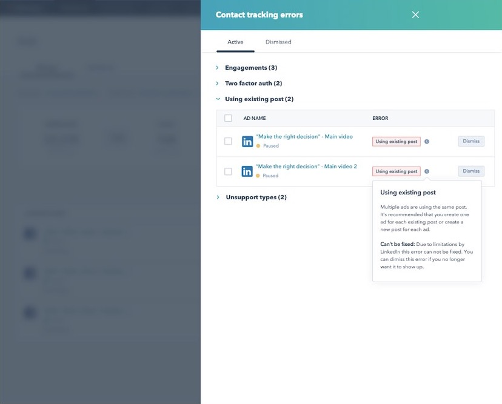

Hi, I’m Jason.
I design simple, well-crafted software for people doing complicated work.
HubSpot · Workflow automation · 2026
Redesigning HubSpot's embedded automation
- 3×increase in automation discovery when we added an Automate button to the deal page (A/B test)
- 45%of AI-recommended workflows went live, twice the rate of starting from a blank page

HubSpot · Workflow automation · 2025
Building HubSpot's first home page for automation
- 2M+Overview page views from the May 2025 launch to October 2026
- 26%of people who described an automation in the AI prompt turned on the workflow it drafted

HubSpot · Ads tool · 2020
Redesigning how HubSpot Ads reports tracking errors
- ~50%fewer tracking errors in the months after release
- 16 → 3monthly support tickets about ad tracking, November 2020 to January 2021

HubSpot · Workflow automation · 2023
Building reusable action sets for HubSpot workflows
- 2,400customers used Action Sets within two months of launch
- 25%of those customers inserted a set more than 200 times, saving each of them at least 3 hours of building